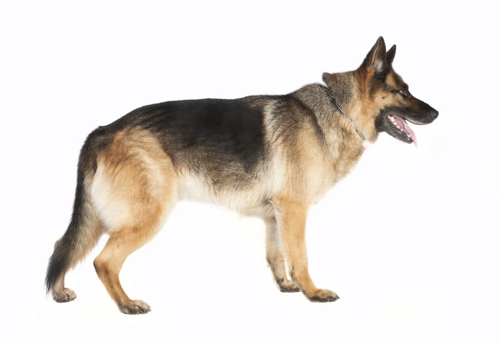

The German Sheperd
Dogs are the best friend of mankind, adopt one is a change in life, this page is gonna show you the story and all the information of one of the best race.

The methodical breeding began in 1889. This breed was created by Captain Max Fréderic Emile Von Stephanitz from the crossing of shepherd dogs from central and southern Germany. The goal was to create a useful dog, very intelligent and strong physically for the keeping of herds.
It was not until the end of the 19th century and the industrial revolution in Germany that the first German Shepherds were brought up. Then, Captain Von Stephanitz defines race. A German Shepherd is essentially a working dog. Dog says versatile, the German Shepherd is useful in many areas. During the First World War, he accompanied the German army, in particular to rescue the wounded soldiers.
As the flocks disappeared, the evolution of the breed pushed the man to use the faculties of the German Shepherd to make him a police, war, blind dog or sanitary dog.
Physical Particularity
- his coat
short and hard turns out to be very dense. Lined with a supplied undercoat, the hair remains lying along the body.
- his color
The most common is black and fire. It can also have black with shades of brown, red brown or yellow to light grey.
- His head
well proportionate to the size of the dog with a reasonable width between the ears. It is not too heavy or elongated. The head is general in appearance and has a pronounced and powerful muzzle.